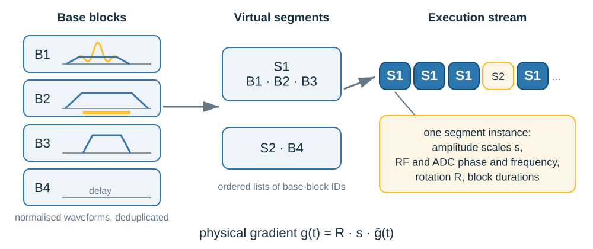
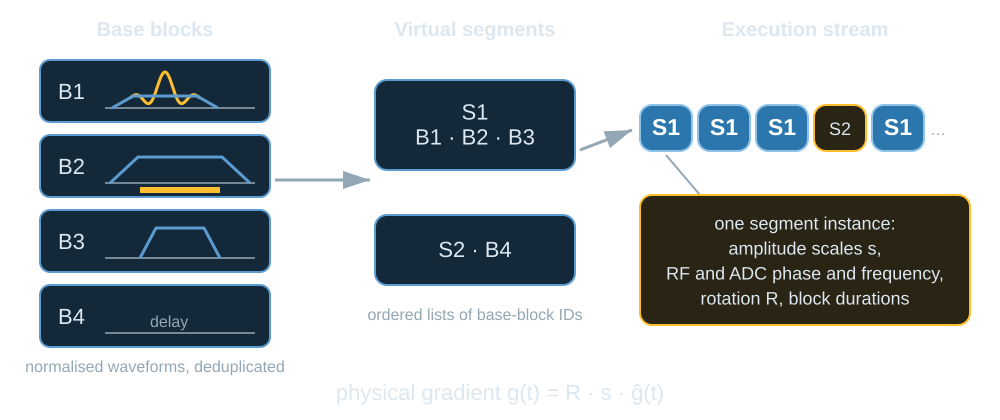
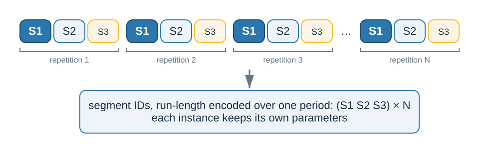
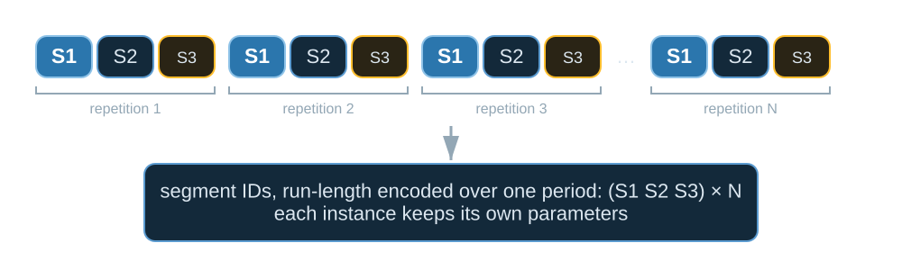

PulSeg representation#
TL;DR
Each Pulseq file becomes an IR cache in PulSeg’s terms: base blocks, virtual segments prepared once, and a stream of segment instances.
The repetition is pypulseqpp’s period of the block table; segments are cut within it where the gradients are near zero, under a grouping each vendor can set.
The interpreter reads the cache through a C89 library pulserver ships.
A scanner plays faster and loads less when it prepares each distinct piece of
the sequence once and then only updates amplitudes, phases and rotations.
pulserver finds those pieces in each file of a NextSequence chain, in the
terms of PulSeg 2.1-alpha (HarmonizedMRI/pulseg).
Lesson 3 of the Course converts gre2d and looks at
its segments.
Capabilities#
Converts a text or binary Pulseq chain into an IR cache that plays every block as designed.
Code:
convert(). Tests: a converted cache reads back as the sequence it came from; the scanner plays every block as its file designs it; a binary file segments into the scan its text does; a chain plays its prescan file then its scan (test_ir.py).Takes the repetition pypulseqpp reports, and segments within it.
Code:
src/cpp/ir/structure.cpp. Tests: the ir segments the repetition pypulseqpp finds; a hyper tr declared as pypulseqpp writes it is the repeating unit (test_ir_repetition.py).Treats a sequence that does not repeat as one repetition, and refuses one longer than 15 s.
Code:
SINGLE_TR_MAX_DURATION_US. Tests: a sequence that does not repeat is one repetition; a sequence that does not repeat is refused past 15 s (test_ir_repetition.py).Cuts virtual segments only where every gradient is near zero, under a tunable grouping.
Code:
Grouping. Tests: the default grouping is what a conversion does unasked; a grouping moves the boundaries and not the gradient (test_ir_grouping.py); a gradient its file ends live may not end the repetition (test_ir.py).Converts under the grouping and number formats a vendor file states.
Code:
read_vendor(),ir_vendor_file. Tests: a design is converted under the vendor file its limits name; an unreadable vendor file is refused and stores nothing (test_design_service.py); a vendor file stating anything else is refused (test_ir_vendor.py).Gives repetitions that differ in pulses, timing or arbitrary gradients their own segment variant.
Code:
src/cpp/ir/. Tests: repetitions that play different pulses each play their own; repetitions whose gradients differ in timing each play their own (test_ir_segments.py).Streams waves through waveform memory, and refuses a conversion whose waves cannot load in time.
Code:
WaveBudget. Tests: waves that do not fit at once stream through a ring of slots per position; an instance that cannot load while the one before it plays is refused (test_ir_waves.py).Sets triggers, digital outputs and the
NOROTexemption per block, as the labels state.Code:
src/cpp/ir/. Tests: the scan waits for a cardiac trigger without driving an output; the scan pulses each output and leaves norot blocks unrotated (test_ir_playout.py).Moves the design to the field-of-view offset with RF and ADC frequency and phase offsets alone.
Code:
prescribe(). Tests: a prescribed offset moves every readout of a file by one frequency; a prescribed slice offset moves every excitation by one frequency (test_ir.py).Writes the sound pressure levels and SAR ratios of each subsequence into the cache.
Code:
convert(). Tests: each file of a chain carries its sound pressure levels into the cache; each file of a chain carries its sar ratios into the cache (test_ir.py).Ships the C89 reader and playout the interpreter links, tested 32-bit and vendor-tagged.
Code:
src/c/,play(). Tests: a vendor cache written here loads in the scanner reader; a reader built for another vendor refuses the cache (test_ir.py).
Division of responsibility#
Prepares each virtual segment once and plays its instances, loading waves into waveform memory on the cache’s schedule.
Generates the scanner’s instructions, resampling waveforms onto the scanner’s rasters (Safety checks).
Applies the prescription’s rotation, after each block’s own.
Method#
The PulSeg model#

Base blocks, virtual segments and the execution stream of segment instances.#

Base blocks, virtual segments and the execution stream of segment instances.#
A base block fixes the shapes and timing of its events at normalised amplitude; equal ones are stored once.
A virtual segment is an ordered list of base blocks, such as an excitation and readout.
A segment instance is one occurrence of a segment: gradient scales and rotation, swapped gradient waveforms, RF amplitude, offsets and shim, ADC offsets or no acquisition, triggers, outputs and block durations.
The execution stream is the ordered list of instances, and it is the whole scan.
An instance plays \(\mathbf{g}(t) = R\, s\, \hat{\mathbf{g}}(t)\): the base block’s normalised waveform, scaled by \(s\) and rotated by \(R\).
Repetition detection#
The repetition, the TR the scanner prepares for, is what
pypulseqpp.Sequence.repetition reports for each file of the chain. It starts
at the first block and is the first of these that applies:
A
TRSizedefinition in the file, when it is shorter than the sequence, divides it and the blocks repeat it. This is how you declare a hyper-TR.The shortest period of the block definitions that every later block repeats, the last copy possibly cut short.
The shortest period dividing the sequence over which blocks match in duration and in the channels they play, so that shots with their own pulses or gradient shapes still repeat.
Otherwise the whole file is one repetition, refused above 15 s.
A slice played with its own preparation and dummy shots is therefore one repetition, and a block played once makes the whole file one. The segment IDs of the execution stream are then run-length encoded over the shortest period the whole stream repeats with.

One repetition of three segments played N times: IDs stored once, parameters per instance.#

One repetition of three segments played N times: IDs stored once, parameters per instance.#
Segmentation rules#
Within the repetition, a Grouping decides where one
virtual segment ends and the next begins:
a boundary may fall between two blocks only where every gradient is within
boundary_gradient_hz_per_mof zero at the join (100 Hz/m);a boundary must fall where the
NOROTorPMClabel changes, since the scanner sets one prescription rotation per segment instance; a change under a gradient is refused;a boundary is added around navigator readouts (
split_navigators), around pure delays at a segment’s edge (split_edge_delays), and between runs that play other RF or ADC events (split_by_pulses,split_by_readouts).
A repetition whose pulses, timing or arbitrary gradients differ from the first plays its own variant of a segment, up to 64 per segment.
Vendor configuration#
The grouping and the number formats the cache is written in are the
interpreter’s, not the sequence’s. An interpreter states them in a vendor file
and names it with ir_vendor_file in the limits it sends
(Services):
[Grouping]
boundary_gradient_hz_per_m: 100
split_by_pulses: true
split_by_readouts: true
split_navigators: true
split_edge_delays: true
[Grouping End]
[VendorProfile]
grad_sample: float32 0
...
[VendorProfile End]
A sequencer that can start a segment under a gradient states a large
boundary_gradient_hz_per_m; one that inserts switching time at every
boundary sets split_edge_delays: false to keep segments few. The
[VendorProfile] block gives each waveform and amplitude as a float or as an
integer with its step, so a sequencer that plays integers converts nothing
while it plays. The ir_wave_ limits state the waveform memory the waves are
laid out for (WaveBudget). Every field must be stated,
and read_vendor() refuses a file that leaves one out.
Field-of-view offset#
The offset is applied by prescribe() as RF and ADC
frequency and phase offsets at the middle of each window; the remaining phase
under a varying readout gradient is applied by the proxy (MRD enrichment).
Two offsets give two caches, and two designs.
Differences from PulSeg 2.1-alpha#
Aspect |
PulSeg 2.1-alpha |
pulserver |
|---|---|---|
Segment-instance boundaries |
Marked by the sequence designer with |
Found within the repetition under the |
|
Identifies the virtual segment an instance plays |
A sticky group, reported to the interpreter’s checks with the duration of each occurrence; it places no segment boundary |
Periodicity |
Not part of the model |
Taken from pypulseqpp when present, and used to encode the stream |
Multishot gradient variants |
One base block with shot variants, chosen per instance by the optional |
No shot index: a gradient that differs between instances is played as a wave from waveform memory, or the run is a variant of its virtual segment |
Examples#
3. What the scanner plays:
gre2dconverted, its segments, and what changes from one TR to the next.Segmentation of a sequence for the scanner: the segmentation of the shipped sequences.
IR cache: the conversion passes, waves, the two stages of a playout and the cache file.
IR conversion: the conversion interface.